硬件 Hacking 全景
从真实接口上的问题入手。设备凭什么识别身份？哪些字节在变化？什么机制防止重放？先采集基线，再改变一个变量，最后验证接收端行为。本站以无线、卡片、USB 与硬件探索为主，开发内容用于辅助实验。

| 接口 | 研究问题 | 实验装备 |
|---|---|---|
| Sub-GHz | 脉冲编码、固定码、有状态滚动码 | 自有遥控器 + 与执行机构断开的测试接收板 / LED |
| NFC / M1 | UID、扇区、认证和读卡器的判定逻辑 | Classic 测试卡 + 兼容空白卡 + 实验读卡器 |
| 低频 RFID / iButton | 仅标识符设计与介质兼容性 | 测试标签 / 钥匙与桌面读头 |
| 红外 / USB | 指令结构与隐式输入信任 | 自有遥控器、电视及离线测试电脑 |
| GPIO / Wi-Fi 扩展 | UART 日志、总线、板载固件与无线元数据 | 3.3 V 开发板、万用表、兼容 ESP32 扩展板 |
刷机、固件定制与恢复
设备固件、SD 卡资源和外部 App 是三个不同产物。对比实验前记录固件版本与源码提交，备份 SD 卡并使用可传数据的 USB 线。先用官方稳定版本建立可工作的基线，再测试社区版本。
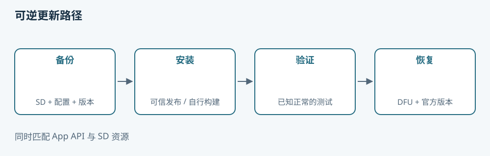
- 通过 qFlipper 或读卡器备份卡片数据、遥控器与 App 配置，记录当前版本。
- 插入 microSD，连接 qFlipper 或官方手机 App，选择 Release 通道，更新时保持供电。
- 打开一个已保存的测试文件、运行一个已知可用的 App。社区安装包按项目发布说明安装，核对来源及其提供的校验值。
- 若固件损坏且界面仍可操作，通过 Settings / Power / Reboot / Firmware Upgrade 进入恢复模式，使用 qFlipper Repair。无响应时按下方官方文档的按键步骤进入 DFU。先恢复官方版本，再恢复兼容的备份。
从一个可审查的小改动开始
git clone --recursive https://github.com/flipperdevices/flipperzero-firmware.git
cd flipperzero-firmware
git rev-parse HEAD # record the exact source revision
./fbt # builds distribution artifacts
# Make a small change, inspect git diff, then rebuild
./fbt COMPACT=1 DEBUG=0 updater_package copro_dist
# Optional, only with your device connected and backed up
# ./fbt flash_usb_full| 选择 | 定位 | 安装前关注 |
|---|---|---|
| 官方 Release | 文档菜单与 SDK 行为的基线 | 版本、SD 资源、发布说明 |
| Momentum | 社区定制、界面与配套 App | 项目发布指南、配套 App 与配置变化 |
| Unleashed | 扩展协议与应用的社区固件 | 硬件目标、固件专属能力与当地发射规定 |
| 自行构建 | 一次研究一个解码器、配置或界面模块 | 固定提交、差异、构建日志与官方恢复包 |
即使固件显示更多选项，发射仍需遵守当地频谱规定。更换固件无法凭空增加射频芯片，也不会自动解决不支持的密码协议。
Sub-GHz 捕获与信号分析
CC1101 工作在指定频段，并非连续覆盖 0–1 GHz。官方工作频段为 300–348、387–464、779–928 MHz，发射还受地区限制。先匹配频率、调制与接收带宽，再解释捕获结果。

| 设置 / 模式 | 含义 | 常见误区 |
|---|---|---|
| Frequency Analyzer | 定位附近强信号的载波，协议需另行识别 | 发现频率峰值就认为已经识别遥控码 |
| Read | 运行已有解码器并显示结构化字段 | 认为能解码的动态协议都能保存 |
| Read RAW | 记录解调后的电平持续时间，用于时序分析 | 将脉冲时长当成 SDR 的 I/Q 采样 |
| RSSI 阈值 | 根据空闲和目标信号强度过滤弱活动 | 阈值过高，反而丢失有效帧边缘 |
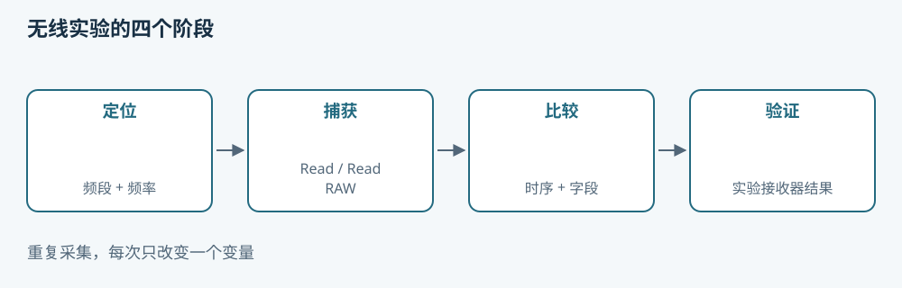
一次可重复的无线实验
- 遥控器靠近 Flipper，但避免紧贴天线。运行 Frequency Analyzer，短按一次，记录检测频段。
- 进入 Read，选择测得的频率和合适 preset，多次按键。可保存的静态协议使用清晰的测试名称保存。
- 需要分析未知时序时，使用 Read RAW，开始录制后间隔按三次，再停止。保留空闲样本。噪声多时分别对比 RSSI、调制与距离。
- 通过 qFlipper 导出 .sub，至少比较两份捕获，标注频率、preset、帧间隔及脉宽比例。仅在隔离的自有固定码接收板上验证重放。
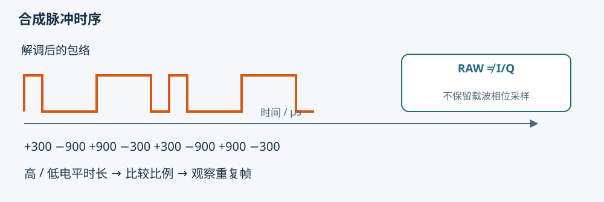
RAW .sub 中，正时长表示高电平，负时长表示低电平，单位为微秒。长低电平间隔可以作为候选帧边界。先对短 / 长时长聚类、归一化漂移，再比较重复帧。仅凭直方图无法判断加密，也不能自动确定比特映射。
python3 pulse_inspect.py synthetic.sub --svg pulses.svg
# For a real capture, adjust the frame-gap threshold to that protocol
python3 pulse_inspect.py your_capture.sub --gap-us 5000 --svg capture.svgNice 遥控器实战
发射前确认遥控器与接收器的准确型号。官方兼容表将 Nice FLO 12/24-bit 列为 433.92 MHz AM 静态协议，将 FLOR-S 列为同频 AM 动态协议。应以型号与解码协议为准，不能仅凭外壳相似判断。
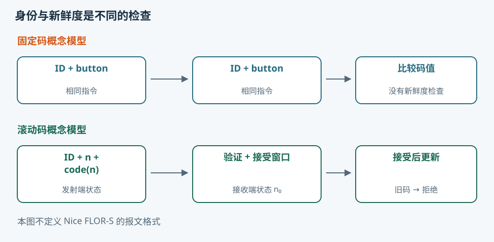
FLO 固定码实验
- 使用备用 FLO 遥控器和匹配的桌面接收板，断开门机 / 闸机，观察 LED 或继电器指示。
- 在确认的频率使用 Sub-GHz / Read。多次捕获同一按键，确认显示静态协议后保存。
- 进入 Saved，选择测试捕获，使用 Emulate 单次发送。将接收板反应与原遥控器对照，再比较另一个按键。
- 记录成功次数 / 总次数、距离与 preset。失败时分别排查协议变体、位长、调制及接收端配对。
FLOR-S 与接收器注册
滚动码设计维护发射端与接收端状态。已经接受过的消息可能因过期而被拒绝，在接收器范围外消耗码值也可能影响同步。官方固件对表中动态协议允许解码，但禁用保存。新发射器按接收器厂商的授权注册流程处理；Flipper 的 Add Manually 仅适用于当前固件明确支持且接收器支持注册的协议。
M1 / MIFARE Classic 卡片
“M1”通常指 MIFARE Classic。先确认卡片家族再选择流程，Classic、DESFire、Ultralight 与低频 RFID 的存储和认证模型不同。显示 UID 只是一个观察结果，还应确认读卡器实际验证什么。
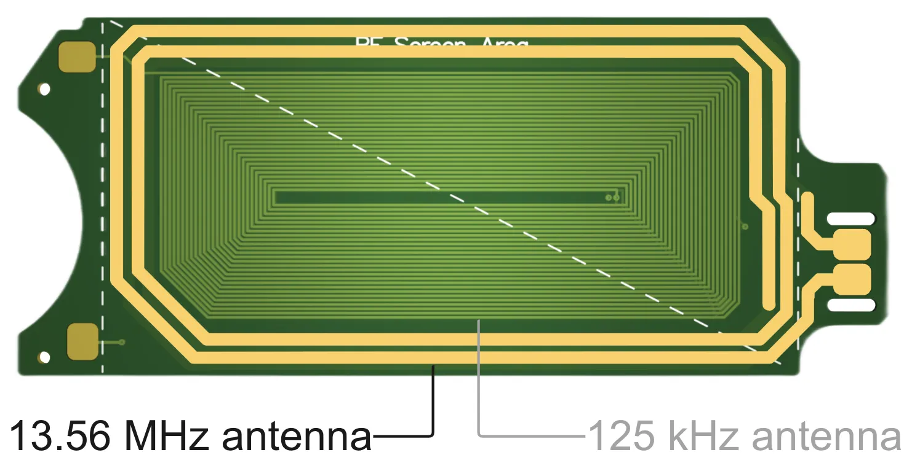
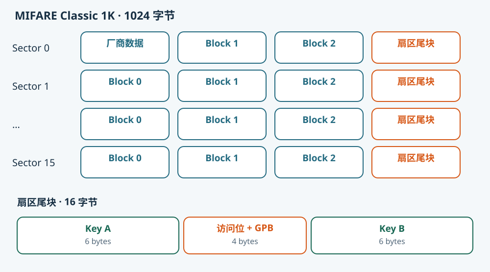
每个扇区尾块包含 6 字节 Key A、访问控制字节及 6 字节 Key B 字段。访问位决定各块权限及 Key B 用法。尾块要谨慎处理，dump 中可读出的字节不一定就是实际秘密密钥。Classic 使用 Crypto1；仅读 UID 的读卡器还存在独立的系统设计弱点。
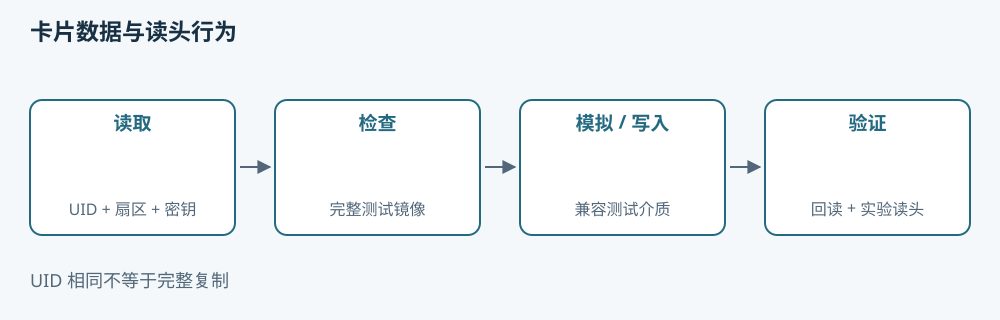
复制已知密钥的测试卡
- 准备一张密钥已知的备用 Classic 测试卡与实验读头，使用 NFC / Read 扫描并保存，记录 UID、类型与读取成功的扇区。
- 写卡前处理未读取的扇区。先在实验读头测试模拟，记录它验证数据认证还是仅检查 UID。
- 进入 Apps / NFC / NFC Magic，使用 Check Magic Tag 检查兼容空白卡，代际与容量以当前 App 文档为准。
- 选择 Write 和完整测试镜像，写入时保持空白卡位置。重新读取并对比 UID 和应用数据，分别测试原卡、Flipper 模拟及空白卡。
| 结果 | 含义 | 下一步 |
|---|---|---|
| 读取 UID | 选卡与标识读取成功 | 扇区认证与数据覆盖率 |
| 完整 Classic dump | 所需数据与可用密钥已取得 | 访问位、动态状态及读头策略 |
| 模拟成功 | 该读头接受了本次交互 | 实体空白卡的行为和时序可能不同 |
| 普通 Classic 空白卡 | 具备正确密钥时可写部分数据 | 厂商 UID 通常不可改写 |
测试 dump 不完整时
官方密钥恢复指南记录了字典尝试、MFKey32 及仅卡攻击。MFKey32 利用合适的读头认证 nonce 记录恢复 Crypto1 状态。在获授权的实验读头上按 Extract MF Keys 流程采集，用文档工具计算候选密钥，再回读测试卡核验覆盖率。采到 nonce 不等于已经恢复密钥，并应区分仅卡攻击与借助读头的前提。认证记录保持私有。
低频 RFID 与接触式钥匙
卡片外形不能判断无线技术。分别用低频 RFID 和 NFC 读取模式识别。125 kHz 标识符卡与经过认证的 13.56 MHz 卡，外形可能完全一致，安全假设却不同。
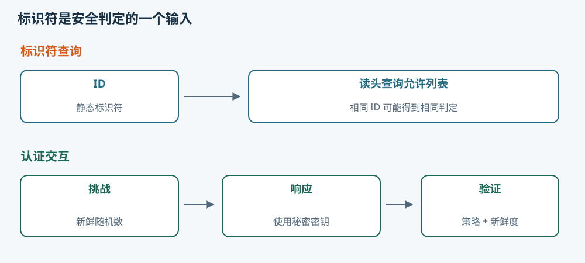
| 介质 | 实验流程 | 边界 |
|---|---|---|
| 125 kHz RFID | 读取备用标签 → 保存 → 自有读头上模拟 → 写入兼容可改写测试标签 → 回读 | T5577 类介质也需匹配协议 / 编码，不是所有低频卡都可写 |
| iButton | 通过接触点读取测试钥匙 → 保存 → 模拟 → 对比兼容可写空白钥匙 | Dallas、Cyfral 与 Metakom 不同，安全认证芯片不能等同于简单序列号钥匙 |
有价值的结论应具体，例如“这个实验读头接受相同标识符，没有额外挑战”。不要将它推广为同厂商所有卡片或读头的结论。实验记录需保留协议、ID、读头型号及实际判定结果。
红外遥控逆向
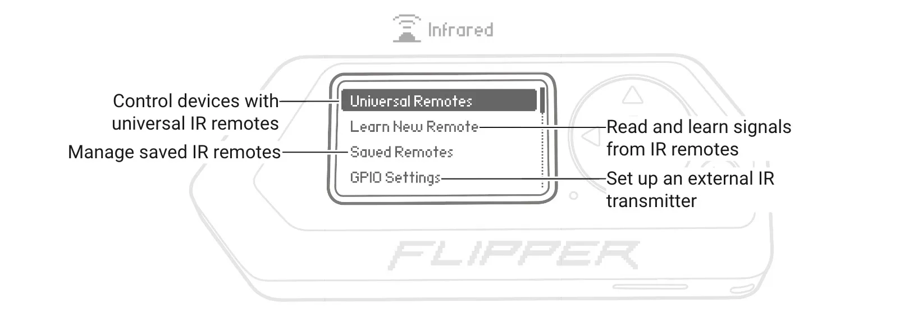
红外信号包含载波与指令包络。接收器把载波解调成 mark 与 space。已解码协议可能显示地址、命令与重复信息，RAW 保留包络时序。空调等有状态遥控器可能发送完整状态，而非简单按键编号。
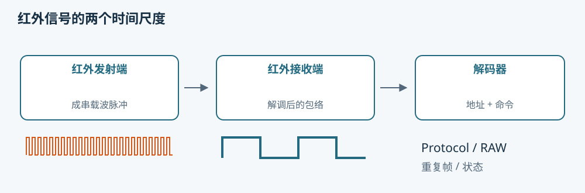
- 进入 Infrared / Learn New Remote，将遥控器对准红外窗口，按一个无害功能键，使用有含义的名称保存。
- 再学习两个按键，通过 qFlipper 查看 .ir，比较地址 / 命令字段或 RAW 时序数组。
- 对自有电器单次发送，观察状态变化。对于 toggle，记录起始状态；对于空调，比较完整状态切换。
先完成单设备学习，再尝试通用码库。即使脉冲看似干净，方向、距离、缺少重复帧或状态不匹配，都可能导致发送失败。
BadUSB 与 BLE HID 实验
USB HID 的核心是输入信任边界，电脑把外设输入视作人在打字。Flipper 可通过支持的 USB / BLE HID 路径发送脚本化键盘输入。先在测试编辑器中观察可见操作，理解枚举、焦点、布局与时序。
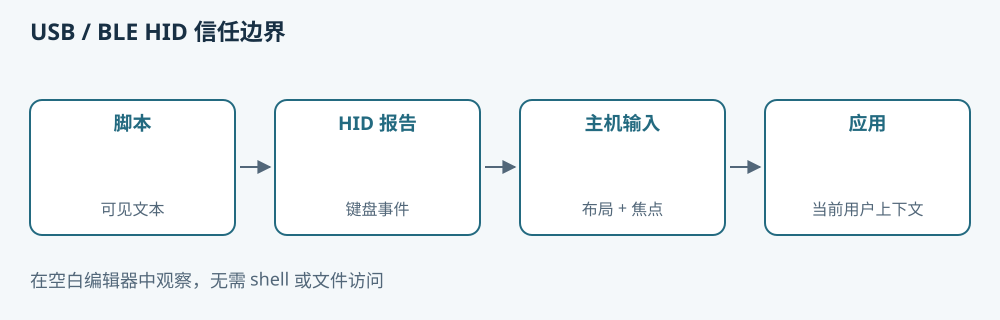
REM Open an empty text editor on your own computer first
DELAY 1500
STRING Flipper lab - visible keyboard input only
ENTER
STRING Verify keyboard layout, focus and timing保存为 SD Card / badusb 下的 visible-hid.txt。自行打开空白编辑器，连接 Flipper，在 Bad USB 中选择并运行。示例不打开 shell，也不读取文件。对比不同键盘布局并记录漏字。BLE 仅与测试主机配对，实验后移除配对。
安全评估可以测量未知 HID 是否被允许、是否需要已解锁会话、设备管控策略是否生效。VID/PID 字符串仅代表设备自报标识，并非密码学身份证明。
GPIO、UART 与 Wi-Fi 扩展
硬件 Hacking 先从万用表和板卡文档开始。接线前确认地线、逻辑电平与总线方向。下述实验使用 3.3 V 逻辑，5 V 供电脚是独立电源轨，不能认为所有配置下 GPIO 都耐 5 V。

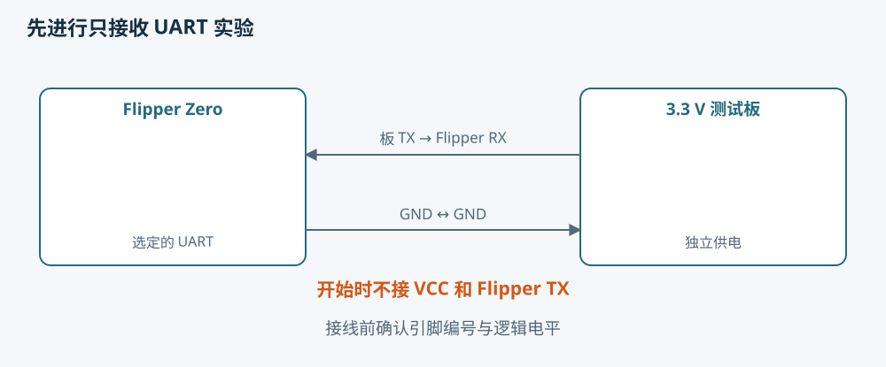
- 使用有文档的 3.3 V 开发板，独立供电。连接共地，板 TX 接所选 Flipper RX，开始时不连接 Flipper TX。
- 进入 GPIO / USB-UART Bridge，匹配 UART 配置，在电脑终端选择 Flipper 串口，按板卡说明设置波特率与帧格式。
- 先只采集启动消息和时间戳，不发送命令。之后仅针对明确测试连接反向通道，日志含秘密时保持私有。
| 总线 / 扩展 | 研究内容 | 必要条件 |
|---|---|---|
| SPI / I²C | 读取测试传感器或观察已知总线事务 | 匹配总线 App、上拉、片选与电平，不盲目驱动正在工作的总线 |
| SWD / 调试 | 自有开发板断点与固件跟踪 | 支持的调试探针，UART 桥本身不等于 SWD 探针 |
| ESP32 + Marauder | 隔离 Wi-Fi 实验网的无线发现与元数据 | 独立板载固件、匹配硬件目标与兼容 Flipper UART App |
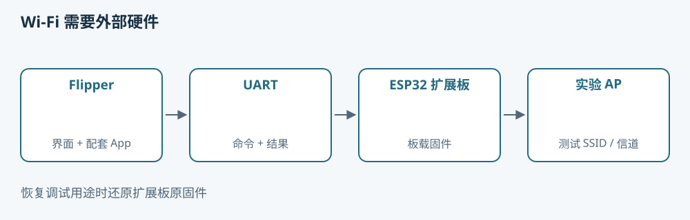
Wi-Fi 实验使用隔离 AP 与测试 SSID。刷机前将扩展板准确型号与 Marauder 的硬件兼容表匹配。将信道、beacon 元数据与 AP 配置对照，分别标记被动接收与会主动发送帧的操作。保留板载原固件，便于恢复调试用途。
把实验做成可复核的研究
| 实验 | 假设与方法 | 保留证据 |
|---|---|---|
| 固定码重放 | 测试接收板会接受相同指令。在相同距离比较原遥控器与模拟。 | preset、解码类型、次数与接收板 LED 记录 |
| 有状态拒绝 | 有状态测试接收器拒绝已接受过的消息，使用玩具接收程序或有文档的开发套件。 | 计数器迁移与接受日志，不公开真实接收器秘密 |
| 卡片验证策略 | 实验读头需要认证扇区数据还是仅 ID？对比读头明确配置。 | 读头配置、扇区读取覆盖率与判定 |
| 硬件可观察性 | 启动日志揭示协议或配置错误，多次记录相同复位序列。 | 接线图、电平、波特率与带时间戳日志 |
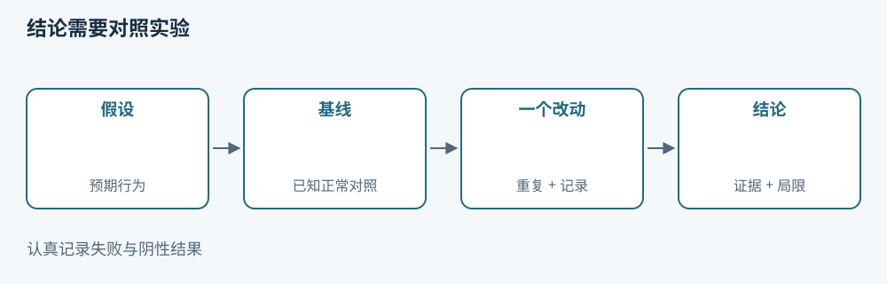
按层定位失败原因
- 抓不到无线信号，先检查支持频段、电池、调制、带宽与天线距离，再考虑解码器。
- 有捕获但接收器无反应，检查静态 / 滚动码分类、注册、重复帧时序与接收器状态。
- 能读 UID 但 dump 不完整，排查扇区密钥与权限，更换固件不保证恢复数据。
- UART 乱码，检查共地、电平、波特率与帧格式。输出电压冲突属于电气问题。
- App 无法加载，核对硬件目标、API 与固件版本，再用匹配 SDK 重建。
辅助 App 与小游戏开发
自定义可视化、输入工具或小游戏可以用小型 FAP App 实现。修改固件内部功能时再构建完整固件。附带的 Bit Lab 用方向键匹配 8 位图案，演示输入事件、消息队列、加锁状态与 Canvas 绘制，不访问射频或卡片。
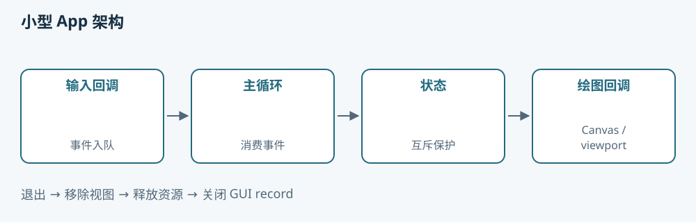
python3 -m venv .venv
. .venv/bin/activate
python -m pip install --upgrade ufbt
# Extract bit-lab-source.zip and enter the bit_lab folder
cd bit_lab
ufbt # builds the .fap in dist/
# Optional, with a Flipper connected over USB
# ufbt launch下载 Bit Lab 源码 已编译 FAP · 阅读 C 源码 · application.fam
manifest 声明 appid、入口函数与 EXTERNAL 应用类型，SDK 提供 API 和工具链。记录构建使用的 SDK 版本，社区固件可能需要匹配 SDK。编译成功只能证明构建通过，输入、显示和资源释放仍需设备验证。
官方资料与社区进阶路线
协议与电气规格以官方文档为起点，再阅读社区实现和 issue。下表为精选导航，不是对他人仓库的批量镜像。版本和 App 可用性会变化，使用前查看项目当前发布与硬件目标。
| 资源 | 适合用途 | 建议读法 |
|---|---|---|
| 官方文档 | 菜单、兼容性、恢复与电气限制 | 先读各章资料链接，对照设备版本 |
| 官方固件源码 | 解码状态机、文件格式与外设服务 | 追踪捕获 → 解码 → 文件 → 发送的调用链 |
| Flipper Lab | 查找外部工具并追溯源码 | 安装前比较 API 兼容性与访问能力 |
| UberGuidoZ | 社区笔记、红外资源与硬件参考 | 挑选小样本审阅，不盲目导入不透明脚本包 |
| Derek Jamison | 实战教程、视频、App 与游戏开发模式 | 从教程仓库进入当前视频与源码 |
| Momentum / Unleashed | 比较社区功能与实现 | 读发布说明，对比一个功能与官方源码的差异 |
| ESP32 Marauder | 外部 Wi-Fi 工具与板卡兼容性 | 从硬件支持表与 Flipper UART 集成入手 |
| Flipper 论坛 | 协议讨论与复现记录 | 搜索准确型号 + 固件 + 现象，对照代码核实说法 |
其他值得继续探索的 Hacking 方向
- 无线传感器与气象站，研究自有发射器的帧结构和校验行为，支持可能位于独立社区 App。
- 协议实现审查，将解码器状态迁移与边沿时序对照，再用合成输入添加回归测试。
- 硬件测试自动化，把已知 UART / I²C 实验做成可重复脚本，同时保存接线与供电假设。
- 超出 Flipper 能力时，频谱与 I/Q 用 SDR，数字总线用逻辑分析仪，底层 NFC 跟踪用专门仪器。